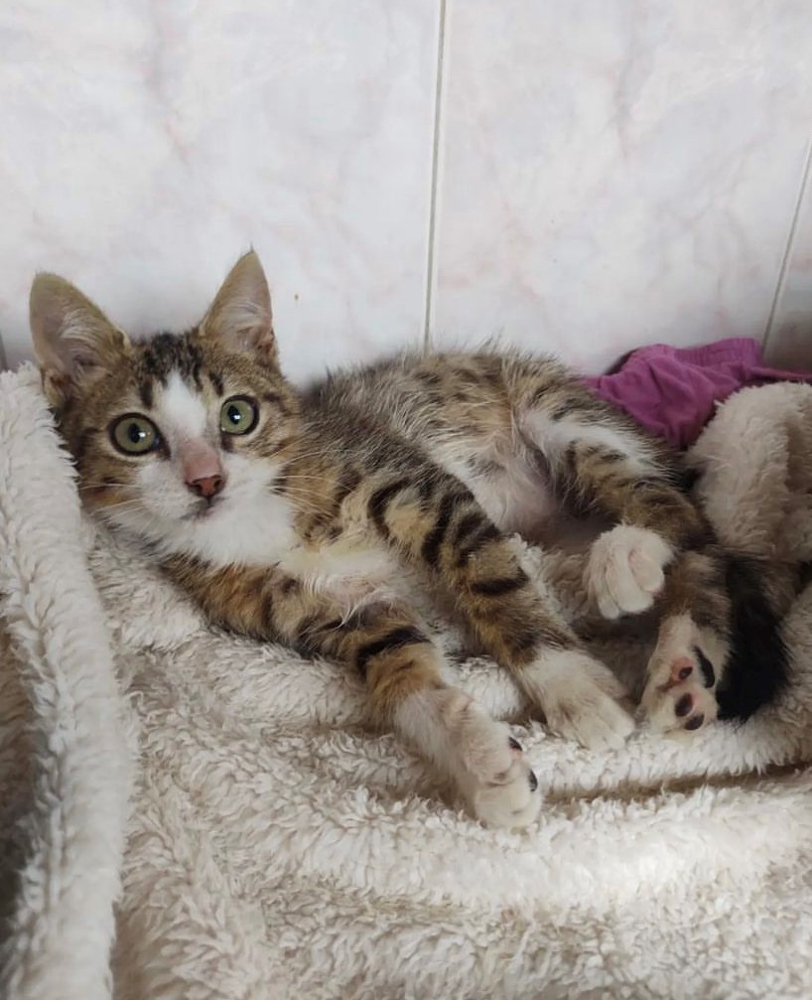

.png)
쯈UIENES SOMOS?
Somos una Fundación de Rescate de perros y gatos que busca poder marcar la diferencia. Cada día, nuestros corazones se llenan de gratitud al ver a animales que alguna vez estuvieron desamparados, ahora felices y amados en sus nuevos hogares. Nuestra fundación se mantiene firme en su compromiso con la causa, porque cada animal rescatado representa una nueva historia de esperanza y una prueba viviente del impacto positivo que todos podemos tener en el mundo animal. Te invitamos a unirte a nosotros en esta misión, porque juntos, podemos cambiar vidas y hacer brillar un rayo de esperanza para los sin hogar.




쯇OR QUE ES IMPORTANTE CASTRAR A TU MASCOTA?
- LA PROPAGACIÓN DE ENFERMEDADES MORTALES
- EVITA EL ABANDONO DE CRÍAS INDESEADAS
- ES LA ÚNICA ACCIÓN QUE PUEDE LOGRAR EL CONTROL POBLACIONAL
.png)
쮺칍MO SABER SI MI MASCOTA ES APTA PARA SER CASTRADA?
- LOS FELINOS SE CASTRAN DESDE LOS 6 MESES HASTA LOS 7 AÑOS DE EDAD
- LOS CANINOS SE CASTRAN DESDE LOS 6 MESES HASTA LOS 7 AÑOS DE EDAD
- NO SE CASTRAN CANINOS QUE PESEN MENOS DE 3 KILOS Y MÁS DE 45
ANTES DE SER OPERADO EL ANIMAL
DEBERA:
- GUARDAR 12 HORAS DE AYUNO SÓLIDO Y 6 HORAS DE AYUNO LÍQUIDO
- NO SUMINISTRAR NINGÚN MEDICAMENTO ANTES DE LA CIRUGÍA